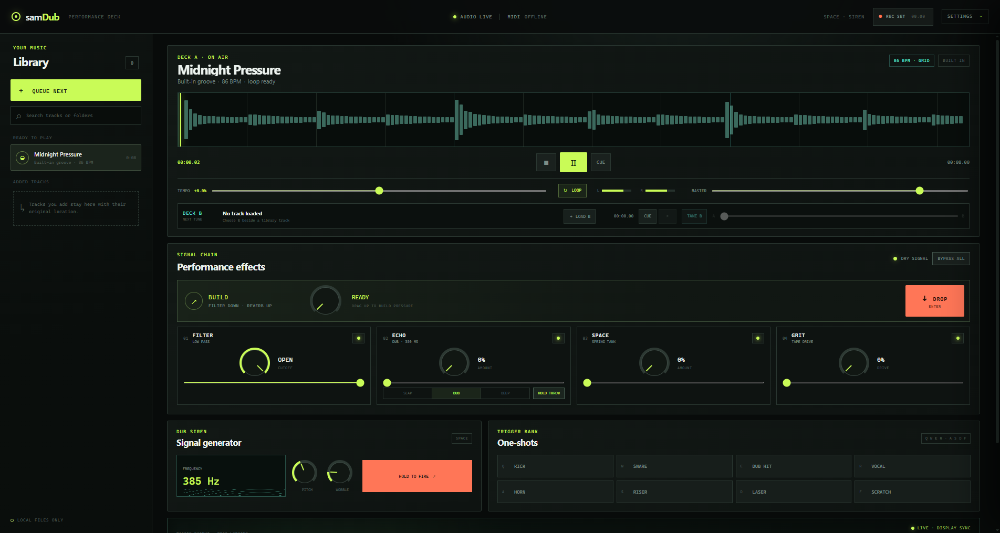
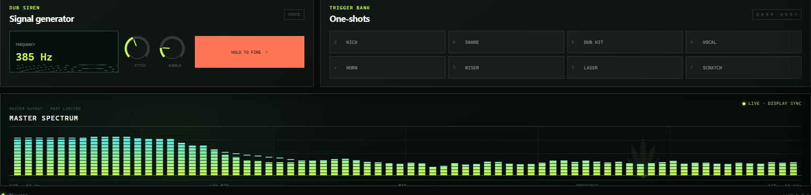

Installer
Installs samDub for your account and adds the weed-leaf shortcut to the Start Menu.
samDub-0.5.0-windows-x64-setup.exe
SHA-256
b335eb7d9064a1b560438b0345592f9795d9d276242ed6871c3d57ab50f8ffe3
LIVE DUB PERFORMANCE
Load a tune. Work the filter and echo. Build pressure, hit Drop, and record the whole set.

DOWNLOAD · v0.5.0
Windows x64 and Intel Mac. Local audio stays local.
Unsigned release — Windows SmartScreen or macOS Gatekeeper may ask you to confirm the app. Verify the SHA-256 before opening.
Installs samDub for your account and adds the weed-leaf shortcut to the Start Menu.
samDub-0.5.0-windows-x64-setup.exe
SHA-256
b335eb7d9064a1b560438b0345592f9795d9d276242ed6871c3d57ab50f8ffe3
Intel Mac build. Not Apple silicon native.
samDub-0.5.0-macos-intel.dmg
samDub-0.5.0-macos-intel.zip
DMG SHA-256
c5dd3d08452057a9c200cba1006c4c8c06e143e6fa1944f1e6d3341c2b05859b
ZIP SHA-256
3077f784ded8d233bfbd66aada180815f9f3169668970116073ab8bdb44bd684
One control raises the pressure. One hit clears it.
Prepare the next tune without replacing the live deck.
Capture the full effected master when the session lands.
A post-limiter spectrum follows the display up to 144 Hz.
Conventional logarithmic bars and peak holds make the mix readable. The weed leaf stays where it belongs: in the background.
